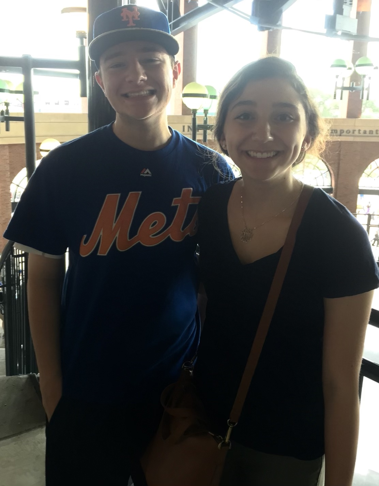
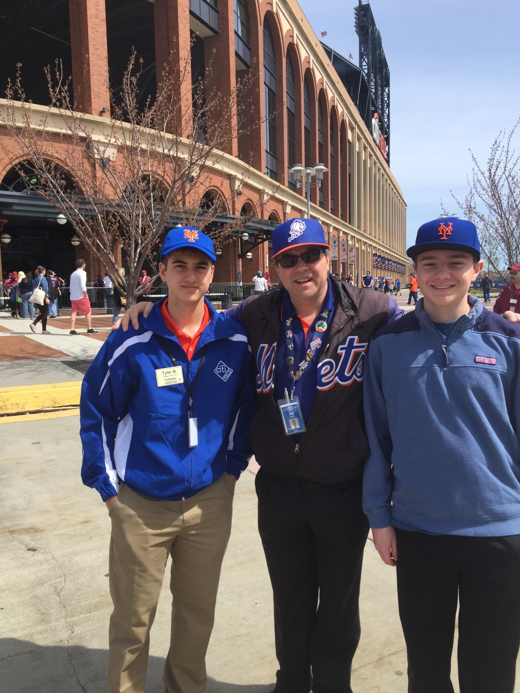

About this Site
Hello there! Thanks for visiting my site on all things baseball. If there is anything I love more than New York bagels, it has to be sitting down to watch the Amazins' (aka the Mets) with my dad on a warm summer night. I have also been attending Mets games since I was eight years old, and have been to 14 major league stadiums. (For proof, below is me at Citi Field, home of the Mets, with my sister. The second picture is me with my dad's childhood best friend and his son, passing the torch to a new generation.) Before that, I attended Somerset Patriots games, which is now a minor league affiliate of the Yankees.
The purpose of this site is to compile stats on my favorite teams and players, and present them in a way that is useful. I live and breath batting average, slugging percentage, RBIs, and on-base percentage, although I am not a fan of advanced stats. You will find a collection of baseball cards on the Players page, which includes a short bio and stats for nine of the best players in the game. These stats are updated daily, and contain stats for the last five games the player has participated in. On the Teams page, you will find teams' current win and loss records ordered by 2021 winning percentage for each division.
If you would like to contact me about any of the stats on this site, or you just want to talk about baseball, please use the contact form below. I will be less likely to respond if you make fun of the Mets and/or express your love for the Yankees. I will try to respond first to factual errors, followed by any requests for baseball debates.